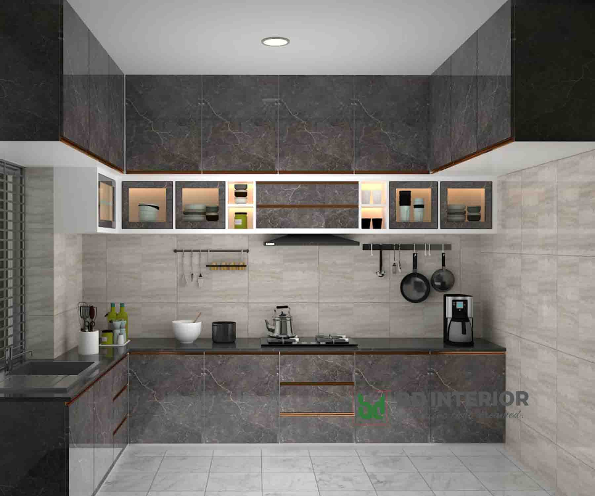

The kitchen is the heart of the home, a space where creativity and nourishment come together. It’s filled with the comforting aroma of freshly baked bread, the sizzle of vegetables in a hot pan, and the gentle hum of appliances at work. Shelves lined with spices, pots hanging neatly above the stove, and a well-organized pantry make cooking a joy. Whether it’s a quick breakfast at the counter or a family dinner prepared with love, the kitchen is where memories are made and shared. It’s a place of warmth, functionality, and endless possibilities.
This image showcases a beautifully designed modern living room with a neutral color palette and a harmonious blend of textures and materials. The space features plush, curved white armchairs and soft beige sofas arranged around a stylish black coffee table, creating an inviting and cozy ambiance. A textured area rug with subtle patterns adds depth to the space, complementing the warm, neutral tones of the walls and furniture.